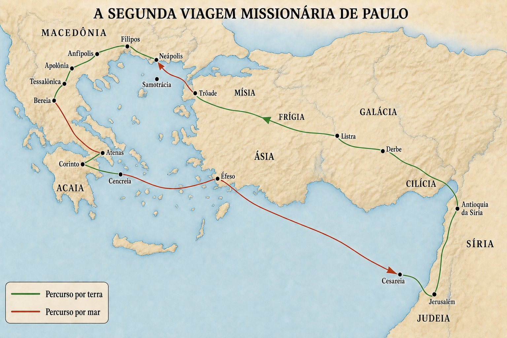

Antes de interpretar um versículo, localize a conversa inteira.
Filipenses é uma carta pastoral, missionária e profundamente pessoal. Paulo escreve a pessoas que conhecia e que já haviam participado de seu ministério. As exortações surgem de uma amizade no evangelho, de conflitos reais e da possibilidade concreta de sofrimento.
Autor
Paulo — Timóteo aparece associado à saudação; a voz da carta é predominantemente singular e paulina.
Destinatários
A igreja em Filipos — “Santos em Cristo Jesus”, com menção a bispos e diáconos (1.1).
Gênero
Carta apostólica — Une notícia pessoal, exortação, teologia, recomendação de cooperadores e agradecimento.
Situação
Paulo está preso — A prisão, o possível julgamento e a expectativa de vida ou morte atravessam a carta.
Local provável
Roma, c. 60–62 d.C. — É a hipótese tradicional; Éfeso e Cesareia também são discutidos.
Ocasião imediata
Oferta enviada por Epafrodito — Paulo agradece, informa sobre sua situação e fortalece a igreja.
A alegria percorre toda a carta e aparece sempre “no Senhor”, em meio a cadeias, oposição, doença, desacordo e necessidade. Filipenses ensina como viver de modo digno do evangelho quando a igreja está sob pressão.
A resposta de Paulo é cristológica e comunitária. Cristo dá forma à vida da igreja: sua humilhação corrige a vaidade (2.5–11), seu valor relativiza os privilégios religiosos de Paulo (3.7–11), seu poder sustenta o contentamento (4.11–13) e sua presença orienta a oração, o pensamento e a prática (4.4–9).
Filipos pensava como uma colônia romana.
Conhecer a cidade ilumina palavras como cidadania, senhorio, parceria e sofrimento. Esse pano de fundo ajuda a perceber o peso social de algumas afirmações de Paulo e deve ser usado a serviço da leitura do texto.
De Crênides a Filipos
Em 356 a.C., Filipe II da Macedônia tomou e rebatizou a cidade. A região possuía valor estratégico e recursos minerais.
“Pequena Roma”
Depois da batalha de Filipos, em 42 a.C., a cidade foi moldada como colônia romana. Veteranos receberam terras, e instituições romanas marcaram a vida pública.
Via Egnácia
A grande estrada que ligava o Adriático ao Oriente passava por Filipos. Pessoas, notícias, comércio e tropas circulavam por esse eixo.
Identidade e lealdade
Os moradores valorizavam sua ligação com Roma. Por isso, “portai-vos como cidadãos” (1.27) e “nossa cidade está nos céus” (3.20) possuem força especial.

Filipos no itinerário de Paulo: mapa didático do percurso narrado em Atos 15.40–18.22, reunindo a localização regional da cidade e os trajetos terrestre e marítimo.
Itinerário da segunda viagem missionária
O percurso abaixo segue Atos 15.40–18.22. As cidades aparecem em ordem narrativa; algumas etapas de estrada e navegação são resumidas.
-
Antioquia da Síria — Paulo parte com Silas (At 15.40–41).
-
Derbe e Listra — Timóteo se junta à equipe (At 16.1–3).
-
Frígia e Galácia — A viagem prossegue pela Ásia Menor (At 16.6).
-
Trôade — A visão do homem macedônio redireciona a missão (At 16.8–10).
-
Samotrácia, Neápolis e Filipos — A entrada da mensagem na Macedônia (At 16.11–40).
-
Anfípolis, Apolônia e Tessalônica — Paulo anuncia Cristo e enfrenta oposição (At 17.1–9).
-
Bereia e Atenas — A mensagem alcança novas comunidades (At 17.10–34).
-
Corinto — Paulo permanece ali por um ano e seis meses (At 18.1–17).
-
Cencreia, Éfeso, Cesareia e Antioquia — O retorno encerra o percurso (At 18.18–22).

Trecho da Via Egnácia em Filipos. A estrada conectava a cidade a uma rede política, militar e comercial muito maior.
O nascimento da igreja: Atos 16
Paulo chegou à Macedônia durante a segunda viagem missionária, acompanhado por Silas, Timóteo e, ao que indica a mudança para a primeira pessoa do plural em Atos, pelo autor de Atos. Em Filipos, o grupo encontrou mulheres reunidas para oração junto ao rio. Lídia, comerciante de púrpura e temente a Deus, ouviu a mensagem, foi batizada com sua casa e ofereceu hospedagem aos missionários.
Depois, a libertação de uma jovem explorada economicamente por seus senhores provocou reação. Paulo e Silas foram acusados de ensinar costumes impróprios para romanos, espancados e presos sem o devido processo. Após o terremoto, o carcereiro e sua casa creram. No dia seguinte, Paulo revelou que ele e Silas eram cidadãos romanos, expondo a ilegalidade do tratamento recebido.
Esse início ajuda a compreender a igreja: pessoas de origens sociais diferentes foram reunidas pelo evangelho; a comunidade nasceu em ambiente de oração, hospitalidade, conflito econômico e confronto com prestígio romano. Quando Paulo mais tarde fala de sofrer pelo evangelho (1.27–30), os filipenses sabiam concretamente o que isso significava.
Limite necessário: Atos menciona Lídia, a jovem escravizada e o carcereiro como testemunhas importantes do começo da igreja. O relato não fornece um censo da comunidade nem atribui a essas três pessoas toda a sua liderança.
Paulo escreve como prisioneiro, pastor e parceiro.
A carta identifica Paulo e Timóteo como “servos de Jesus Cristo” (1.1). Embora Timóteo esteja na saudação e seja um cooperador próximo, o texto passa logo à primeira pessoa do singular. A atribuição a Paulo é antiga e amplamente reconhecida.
Que Paulo aparece na carta?
A situação de Paulo dá corpo ao ensino. Ele está preso (1.7,13–14), aguarda uma decisão que pode terminar em libertação ou morte (1.20–26; 2.23–24), recebe notícias por meio de pessoas e depende de uma rede de cooperação. Sua autoridade apostólica convive com profundo afeto: ele chama os filipenses de sua alegria e coroa (4.1).
Paulo se apresenta como exemplo de dependência de Cristo. Ele aprendeu a considerar suas credenciais como perda diante do Senhor (3.4–11), admite que ainda prossegue para o alvo (3.12–14) e reconhece a generosidade da igreja (4.10–20). A imitação pedida em 3.17 e 4.9 acompanha uma vida submetida ao evangelho.
Certo
Escrita da prisão
A carta declara repetidamente que Paulo está em cadeias. A igreja sabe disso e envia Epafrodito para servi-lo.
Provável
Roma, c. 60–62
“Guarda pretoriana” (1.13), “casa de César” (4.22) e a prisão de Atos 28 sustentam a leitura tradicional.
Em debate
Éfeso ou Cesareia
A proximidade de Éfeso facilitaria as viagens; Cesareia foi uma prisão conhecida. Cada alternativa, incluindo Roma, enfrenta dificuldades históricas próprias.
Como a carta chegou a Filipos?
Epafrodito é o elo mais visível. A igreja o enviou com uma oferta; ele serviu a Paulo, adoeceu gravemente e depois foi mandado de volta (2.25–30; 4.18). É provável que tenha levado a carta. Paulo também planejava enviar Timóteo para obter notícias e esperava visitar os filipenses caso fosse libertado (2.19–24).
A carta não identifica um secretário. O ditado era comum no mundo antigo, porém a identidade de quem teria escrito fisicamente Filipenses permanece desconhecida. Paulo assume a mensagem, Timóteo está com ele e Epafrodito participa da comunicação entre o apóstolo e a igreja.
Uma amizade missionária atravessada por tensões reais.
Filipenses reúne notícias da prisão, chamado à firmeza, o modelo de Cristo, exemplos de serviço, advertência contra falsos fundamentos e agradecimento pela oferta. A relação entre Paulo, a igreja e o evangelho dá unidade a esses assuntos.
1.1–11
Saudação, gratidão e oração
Paulo agradece pela participação da igreja no evangelho e ora para que o amor cresça com conhecimento e discernimento.
1.12–26
As cadeias servem ao avanço do evangelho
A prisão tornou Cristo conhecido e encorajou outros a pregar. Paulo avalia vida e morte a partir de Cristo.
1.27–2.18
Vivam de modo digno, em unidade e humildade
A igreja deve permanecer firme sem rivalidade. O movimento de humilhação e exaltação de Cristo dá forma à vida comum.
2.19–30
Timóteo e Epafrodito tornam o ensino visível
Os dois cooperadores exemplificam interesse genuíno, serviço sacrificial e compromisso com a obra de Cristo.
3.1–4.1
Justiça em Cristo e perseverança rumo ao alvo
Paulo rejeita confiança na carne, deseja conhecer Cristo e chama a igreja a imitar bons exemplos enquanto aguarda o Salvador.
4.2–9
Reconciliação, alegria, oração, mente e prática
As exortações finais tratam a vida comunitária de forma integrada. A paz de Deus acompanha a oração, a reconciliação e a obediência em meio ao conflito.
4.10–23
Oferta, contentamento e despedida
Paulo agradece a ajuda sem bajulação ou dependência servil. A oferta é parceria no sofrimento e sacrifício agradável a Deus.
Participação no evangelho
A palavra koinōnía envolve vínculo e participação. A igreja ora, sofre, envia pessoas e reparte recursos.
A mente moldada por Cristo
O campo de phronéō atravessa a carta e descreve uma disposição que orienta opiniões, relações e escolhas.
Alegria no Senhor
A alegria nasce de avaliar a dor, o perigo e as demais circunstâncias a partir da presença e da obra de Cristo.
Exemplo e prática
Cristo, Paulo, Timóteo e Epafrodito mostram que a doutrina cristã possui forma concreta: serviço, renúncia e perseverança.
O trecho conduz da inquietação à prática perseverante.
Os versículos 6–9 pertencem às exortações iniciadas em 4.2 e formam uma sequência coesa sobre oração, paz, pensamento e prática. O versículo 10 abre o agradecimento pela oferta dos filipenses e marca o início do assunto seguinte.
Frases de orientação · ACF
“Não estejais inquietos por coisa alguma” (v.6) · “a paz de Deus […] guardará os vossos corações” (v.7) · “nisso pensai” (v.8) · “isso fazei” (v.9).
4.2–5 · Relações
4.6–7 · Oração
4.8–9 · Mente e prática
Ideia exegética da unidade
À comunidade que deve permanecer firme no Senhor, Paulo ordena que substitua a inquietação dominadora por oração específica e agradecida; promete que a paz de Deus guardará seu interior em Cristo; e orienta-a a ocupar a mente com tudo o que corresponde ao bem e a praticar o ensino apostólico.
Essa formulação reúne relacionamento com Deus, vida interior e conduta aprendida. A ansiedade ocupa o início do argumento; o pensamento disciplinado e a prática perseverante completam o movimento.
Siga o argumento de Paulo enquanto a gramática esclarece o sentido.
A referência lexical apresenta a forma de cada termo, seus significados possíveis e o sentido mais provável na passagem. O comentário acompanha o argumento em prosa e mostra como essas escolhas contribuem para o movimento completo de Filipenses 4.6–9.
Como consultar: “Possibilidades” descreve o campo semântico do termo; “Sentido na passagem” registra a acepção favorecida pela frase e pelo contexto. Base textual: NA28, comparada à ACF. Alcance lexical cotejado com léxicos reunidos pelo Logeion, Universidade de Chicago. Os verbetes evitam transferir todos os significados possíveis para uma única ocorrência.
4.6
Da inquietação à oração agradecida
Paulo redireciona a inquietação para uma relação consciente e específica com Deus.
Referência lexical e gramatical
- μηδὲν μεριμνᾶτε — mēden merimnate — Sentido na passagem: “não vivais dominados pela inquietação por coisa alguma”.
Lema
μεριμνάω — merimnaō.
Possibilidades
Estar ansioso ou preocupado; ocupar-se cuidadosamente de alguém ou de alguma responsabilidade.
Forma e função
μεριμνᾶτε: presente ativo imperativo, 2ª pessoa do plural; μηδέν delimita aquilo acerca do que a igreja não deve permanecer inquieta.
Por que aqui
O contraste com a oração determina o valor negativo. Em 2.20, a mesma família verbal descreve positivamente o cuidado de Timóteo; em 4.6, trata-se da preocupação que absorve a pessoa.
- ἐν παντί — en panti — Sentido na passagem: “em tudo”, isto é, em cada situação enfrentada.
Lema
πᾶς — pas.
Possibilidades
Todo, cada, inteiro; no singular neutro com ἐν, pode assumir valor abrangente: “em tudo” ou “em toda circunstância”.
Forma e função
Adjetivo neutro singular no dativo, regido pela preposição ἐν; introduz o âmbito em que a oração deve ocorrer.
Por que aqui
A expressão corresponde ao alcance de μηδέν: nenhuma situação deve ficar entregue à inquietação; todas podem ser levadas a Deus.
- τῇ προσευχῇ καὶ τῇ δεήσει — tē proseuchē kai tē deēsei — Sentido na passagem: oração dirigida a Deus e súplica nascida de uma necessidade concreta.
Lemas
προσευχή — proseuchē; δέησις — deēsis.
Possibilidades
Προσευχή: oração ou ato de orar. Δέησις: pedido, petição, súplica motivada por carência.
Forma e função
Substantivos femininos singulares no dativo, ligados a ἐν; descrevem o meio ou a esfera em que os pedidos são apresentados.
Por que aqui
Os termos se sobrepõem sem serem idênticos: o primeiro nomeia a oração de modo amplo; o segundo destaca a necessidade específica que chega diante de Deus.
- μετὰ εὐχαριστίας — meta eucharistias — Sentido na passagem: os pedidos são acompanhados de gratidão.
Lema
εὐχαριστία — eucharistia.
Possibilidades
Gratidão, agradecimento, expressão de reconhecimento por um benefício recebido.
Forma e função
Substantivo feminino singular no genitivo, regido por μετά; indica a atitude que acompanha oração e súplica.
Por que aqui
A gratidão recorda a fidelidade já conhecida enquanto a resposta ainda é esperada e impede que a súplica se reduza à enumeração de faltas.
- τὰ αἰτήματα ὑμῶν γνωριζέσθω — ta aitēmata hymōn gnōrizesthō — Sentido na passagem: “sejam apresentados a Deus os pedidos de vocês”.
Lemas
αἴτημα — aitēma; γνωρίζω — gnōrizō.
Possibilidades
Αἴτημα: pedido ou petição concreta. Γνωρίζω: tornar conhecido, revelar, comunicar ou dar a conhecer.
Forma e função
αἰτήματα é neutro plural e funciona como sujeito; γνωριζέσθω é presente passivo imperativo, 3ª pessoa do singular, concordância comum com sujeito neutro plural.
Por que aqui
Paulo descreve a apresentação consciente e específica das necessidades. O verbo ressalta a relação de dependência, sem sugerir desconhecimento da parte de Deus.
Paulo começa com μηδὲν μεριμνᾶτε — mēdèn merimnâte (“não estejais inquietos por coisa alguma”). O verbo μεριμνάω — merimnáō pode indicar tanto a preocupação que domina a pessoa quanto o cuidado responsável por alguém. A própria carta emprega essa família verbal para o interesse sincero de Timóteo pelos filipenses (2.20). Aqui, o contraste com a oração define o sentido: Paulo trata da inquietação que absorve a atenção e faz a comunidade carregar suas necessidades como se estivesse entregue a si mesma. A ordem é dirigida à igreja inteira e orienta sua postura habitual diante das pressões mencionadas no contexto.
A expressão seguinte amplia o horizonte: ἐν παντὶ — en pantí (“em tudo”, “em cada situação”). Aquilo que não deve ser governado pela ansiedade deve ser apresentado a Deus. Paulo descreve essa apresentação por palavras que se completam. προσευχή — proseuchḗ é o termo geral para oração; δέησις — déēsis destaca a súplica nascida de uma necessidade; αἴτημα — aítēma identifica o pedido concreto. A oração, portanto, possui direção, urgência e conteúdo reconhecível.
Esses pedidos devem ser apresentados μετὰ εὐχαριστίας — metà eucharistías (“com ação de graças”). A gratidão acompanha a súplica e recorda a fidelidade já experimentada enquanto a resposta ainda é aguardada. A expressão τὰ αἰτήματα ὑμῶν γνωριζέσθω — tà aitḗmata hymôn gnōrizésthō (“sejam conhecidos os vossos pedidos”) descreve o ato de colocar conscientemente diante de Deus aquilo que pesa sobre a comunidade. “Fazer conhecido” não sugere que Deus ignore a necessidade; ressalta a relação de dependência na qual os filipenses lhe apresentam cada pedido.
Limite da aplicação: a ansiedade clínica e a angústia também podem atingir cristãos fiéis. A ordem orienta o tratamento espiritual da inquietação e deve ser acompanhada de cuidado médico e pastoral sempre que necessário.
4.7
A paz de Deus como sentinela
Deus promete guardar o seu povo no âmbito da união com Cristo, inclusive quando a compreensão e o controle são limitados.
Referência lexical e gramatical
- ἡ εἰρήνη τοῦ θεοῦ — hē eirēnē tou theou — Sentido na passagem: a paz que procede de Deus e é experimentada em relação com ele.
Lema
εἰρήνη — eirēnē.
Possibilidades
Paz em oposição à guerra; concórdia; bem-estar, integridade ou tranquilidade; no uso bíblico, pode descrever a reconciliação e o bem concedidos por Deus.
Forma e função
Substantivo feminino singular no nominativo; é o sujeito de φρουρήσει. τοῦ θεοῦ identifica sua relação e origem em Deus.
Por que aqui
A sequência oração–paz e a expressão “em Cristo Jesus” apontam para o dom protetor de Deus, sem prometer ausência de conflito externo.
- ὑπερέχουσα πάντα νοῦν — hyperechousa panta noun — Sentido na passagem: uma paz que ultrapassa a capacidade humana de compreender plenamente.
Lemas
ὑπερέχω — hyperechō; νοῦς — nous.
Possibilidades
Ὑπερέχω: estar acima, superar, exceder, distinguir-se. Νοῦς: mente, entendimento, faculdade de julgar, modo de pensar.
Forma e função
ὑπερέχουσα é particípio presente ativo, feminino singular, concordando com “paz”; πάντα νοῦν funciona como complemento daquilo que ela excede.
Por que aqui
O contexto trata de circunstâncias que a comunidade não controla. A frase reconhece o limite da compreensão humana e qualifica a paz, sem desvalorizar o pensamento disciplinado ordenado no v.8.
- φρουρήσει — phrourēsei — Sentido na passagem: “guardará”, como uma sentinela que protege um lugar.
Lema
φρουρέω — phroureō.
Possibilidades
Guardar militarmente, vigiar, manter sob custódia, proteger ou preservar.
Forma e função
Futuro ativo indicativo, 3ª pessoa do singular; apresenta o que a paz de Deus realizará sobre os objetos mencionados a seguir.
Por que aqui
A imagem de vigilância combina com “corações” e “pensamentos” como território protegido. O verbo comunica proteção efetiva, não uma explicação completa das circunstâncias.
- τὰς καρδίας καὶ τὰ νοήματα — tas kardias kai ta noēmata — Sentido na passagem: a vida interior e os pensamentos da comunidade.
Lemas
καρδία — kardia; νόημα — noēma.
Possibilidades
Καρδία: coração físico ou centro interior de desejos, decisões e afetos. Νόημα: pensamento, propósito, intenção ou disposição mental.
Forma e função
Dois substantivos plurais no acusativo; recebem a ação de φρουρήσει.
Por que aqui
A combinação abrange a pessoa interior sem propor uma divisão rígida entre emoção e razão. A paz protege afetos, avaliações, intenções e decisões “em Cristo Jesus”.
A conjunção que abre o versículo liga a promessa à prática do versículo anterior. Quando a comunidade leva suas necessidades a Deus em oração agradecida, ἡ εἰρήνη τοῦ θεοῦ — hē eirḗnē tou theoû (“a paz de Deus”) passa a ocupar o centro da frase. A expressão aponta para a origem dessa paz: ela procede de Deus e corresponde à segurança que sua presença concede ao povo.
Paulo a descreve como ὑπερέχουσα πάντα νοῦν — hyperéchousa pánta noûn (“excedendo todo entendimento”). Νοῦς — noûs designa a capacidade de compreender e avaliar. A frase reconhece que a razão humana encontra limites diante de situações que não consegue explicar nem controlar. A paz de Deus permanece eficaz dentro desses limites e sustenta o crente enquanto ele continua pensando, discernindo e agindo.
A promessa se concentra em φρουρήσει — phrourḗsei (“guardará”). Φρουρέω — phrouréō era usado para vigiar ou manter alguém sob proteção; por isso, a metáfora sugere uma sentinela que impede a invasão de forças hostis. Uma colônia romana compreenderia facilmente essa imagem, embora Paulo não a vincule a uma guarnição específica de Filipos. A proteção alcança καρδία — kardía, o centro dos desejos, afetos, decisões e reflexões, e νόημα — nóēma, os pensamentos, propósitos e disposições mentais. A expressão final, “em Cristo Jesus”, define o âmbito dessa guarda: a promessa pertence à vida unida a Cristo.
Relação com o v.6: a promessa recai sobre a paz que guarda o crente; a resposta a cada pedido permanece sob a sabedoria de Deus.
4.8
Uma mente treinada para reconhecer o bem
Depois de falar da oração, Paulo dirige a atenção ao conteúdo habitual do pensamento comunitário.
Referência lexical e gramatical
- ἀληθῆ · σεμνά — alēthē · semna — Sentido na passagem: aquilo que é verdadeiro e moralmente digno de respeito.
Lemas
ἀληθής — alēthēs; σεμνός — semnos.
Possibilidades
Ἀληθής: verdadeiro, veraz, real ou genuíno. Σεμνός: digno, respeitável, honrado, de conduta séria.
Forma e função
Adjetivos neutros plurais ligados à repetição de ὅσα (“tudo o que”); caracterizam as realidades que devem receber atenção.
Por que aqui
“Verdadeiro” impede que a lista seja governada por aparência ou conveniência; “digno” acrescenta o peso moral daquilo que merece respeito.
- δίκαια · ἁγνά — dikaia · hagna — Sentido na passagem: aquilo que corresponde à justiça e permanece moralmente puro.
Lemas
δίκαιος — dikaios; ἁγνός — hagnos.
Possibilidades
Δίκαιος: justo, correto, conforme ao direito ou à vontade de Deus. Ἁγνός: puro, inocente, casto, livre de contaminação moral.
Forma e função
Adjetivos neutros plurais na série coordenada; acrescentam critérios éticos ao conteúdo do pensamento.
Por que aqui
Paulo dirige a atenção ao que pode ser reconhecido como reto e limpo. Os termos limitam qualquer leitura de “pensamento positivo” desligada da verdade moral.
- προσφιλῆ · εὔφημα — prosphilē · euphēma — Sentido na passagem: aquilo que é amável e merece ser mencionado com aprovação.
Lemas
προσφιλής — prosphilēs; εὔφημος — euphēmos.
Possibilidades
Προσφιλής: agradável, amável, querido ou capaz de despertar afeição. Εὔφημος: de boa reputação, recomendável, auspicioso ou digno de boa menção.
Forma e função
Adjetivos neutros plurais; ambos são raros no Novo Testamento e completam a série com a dimensão relacional e pública do bem.
Por que aqui
Como a série começou com a verdade e incluiu justiça e pureza, “amável” e “de boa fama” designam o bem digno de afeição e reconhecimento, não mera popularidade.
- ἀρετή · ἔπαινος — aretē · epainos — Sentido na passagem: excelência moral e aquilo que merece aprovação legítima.
Lemas
ἀρετή — aretē; ἔπαινος — epainos.
Possibilidades
Ἀρετή: excelência, virtude ou qualidade moral. Ἔπαινος: louvor, aprovação ou reconhecimento do que é digno.
Forma e função
Substantivos femininos singulares nas expressões condicionais “se há alguma…”; resumem e ampliam os seis qualificadores anteriores.
Por que aqui
As expressões convidam a reconhecer o bem onde ele realmente exista, sempre sob os critérios já apresentados e sob o ensino apostólico retomado no v.9.
- ταῦτα λογίζεσθε — tauta logizesthe — Sentido na passagem: “considerai cuidadosamente essas coisas” e mantende nelas a atenção.
Lema
λογίζομαι — logizomai.
Possibilidades
Calcular, contar, atribuir, levar em conta, considerar, avaliar ou pensar refletidamente.
Forma e função
Presente médio imperativo, 2ª pessoa do plural; ταῦτα retoma toda a lista como objeto da consideração.
Por que aqui
O verbo exige avaliação deliberada e atenção continuada. Paulo orienta o conteúdo e o critério do pensamento comunitário, não um devaneio religioso.
Depois de tratar da inquietação e da paz que guarda o interior, Paulo volta-se para aquilo que ocupa deliberadamente a atenção da igreja. A repetição de ὅσα — hósa (“tudo o que”) conduz o leitor por seis qualidades: verdadeiro, digno, justo, puro, amável e de boa fama. Juntas, elas descrevem o que merece ser reconhecido e avaliado como matéria apropriada para o pensamento cristão.
Ἀληθῆ — alēthê aponta para o que corresponde à verdade e resiste ao engano. Σεμνά — semná descreve o que possui dignidade moral e merece respeito. Δίκαια — díkaia refere-se ao que está de acordo com a justiça; ἁγνά — hagná, ao que permanece moralmente puro. Προσφιλῆ — prosphilê indica o que é amável e favorece uma afeição ordenada pelo bem; εὔφημα — eúphēma, o que é recomendável e pode ser mencionado de maneira honrosa. Como “verdadeiras” abre a série, os critérios de amabilidade e boa fama permanecem subordinados à realidade e à justiça.
A ordem aparece em λογίζεσθε — logízesthe, de λογίζομαι — logízomai (“considerar”, “avaliar”, “levar em conta”). Paulo pede uma atenção refletida e persistente. As expressões finais — “se há alguma virtude” e “se há algum louvor” — resumem a lista e convidam a reconhecer o bem onde ele realmente se encontra. O vocabulário seria compreensível no ambiente moral greco-romano, porém o versículo seguinte fornece sua medida decisiva: o ensino apostólico recebido e visto em Paulo. Em uma comunidade marcada por tensão entre irmãs, pressão externa e inquietação, esse exercício mental alimenta julgamento verdadeiro, respeito e reconciliação.
Pergunta de observação: que pensamentos alimentariam reconciliação entre Evódia e Síntique (4.2–3), e quais ampliariam suspeita, vaidade e rivalidade?
4.9
Do ensino observado à prática perseverante
O evangelho aprendido deve adquirir forma pública e repetida na vida da igreja.
Referência lexical e gramatical
- ἐμάθετε · παρελάβετε — emathete · parelabete — Sentido na passagem: aquilo que os filipenses aprenderam e acolheram como ensino transmitido.
Lemas
μανθάνω — manthanō; παραλαμβάνω — paralambanō.
Possibilidades
Μανθάνω: aprender, descobrir, compreender ou ser instruído. Παραλαμβάνω: receber, acolher, tomar consigo ou aceitar algo transmitido.
Forma e função
Ambos são aoristos ativos indicativos, 2ª pessoa do plural; recordam ações reais da formação anterior da comunidade.
Por que aqui
A sequência reúne o processo de aprendizagem e a recepção responsável da instrução. O contexto favorece o sentido de tradição ensinada e acolhida.
- ἠκούσατε · εἴδετε ἐν ἐμοί — ēkousate · eidete en emoi — Sentido na passagem: o que a igreja ouviu de Paulo e observou concretamente em sua vida.
Lemas
ἀκούω — akouō; ὁράω — horaō.
Possibilidades
Ἀκούω: ouvir, escutar, tomar conhecimento ou compreender. Ὁράω: ver, perceber, observar ou experimentar.
Forma e função
ἠκούσατε é aoristo ativo indicativo; εἴδετε é segundo aoristo ativo indicativo; ambos estão na 2ª pessoa do plural. ἐν ἐμοί localiza o exemplo na conduta de Paulo.
Por que aqui
A instrução apostólica chegou por comunicação verbal e por comportamento observável. A vida do mensageiro tornou visível a forma do ensino recebido.
- ταῦτα πράσσετε — tauta prassete — Sentido na passagem: “continuai praticando essas coisas”.
Lema
πράσσω — prassō.
Possibilidades
Fazer, realizar, executar, praticar ou manter determinada conduta.
Forma e função
Presente ativo imperativo, 2ª pessoa do plural; ταῦτα reúne o conteúdo aprendido, recebido, ouvido e visto.
Por que aqui
O presente imperativo apresenta a prática como conduta reiterada da comunidade. O ensino deve assumir forma reconhecível na vida comum.
- ὁ θεὸς τῆς εἰρήνης — ho theos tēs eirēnēs — Sentido na passagem: “o Deus de paz”, aquele de quem a paz procede e cuja presença acompanha a igreja.
Construção
θεός — theos com εἰρήνη — eirēnē no genitivo.
Possibilidades
A expressão pode caracterizar Deus por sua relação com a paz e apresentá-lo como sua fonte e doador.
Forma e função
É o sujeito da promessa ἔσται μεθ’ ὑμῶν (“estará convosco”), que encerra a unidade.
Por que aqui
O v.7 prometeu que “a paz de Deus” guardaria a comunidade; o v.9 aprofunda a promessa ao falar da presença do próprio “Deus de paz”.
O versículo 9 dá forma concreta ao exercício mental do versículo anterior. Paulo recorda a formação que os filipenses já receberam por quatro caminhos relacionados. Ἐμάθετε — emáthete (“aprendestes”) contempla o processo pelo qual foram instruídos. Παρελάβετε — parelábete (“recebestes”) pode designar a acolhida de um ensino transmitido com autoridade. Ἠκούσατε — ēkoúsate (“ouvistes”) abrange a mensagem comunicada por Paulo, enquanto εἴδετε ἐν ἐμοί — eídete en emoí (“vistes em mim”) dirige a atenção para sua conduta observável. O evangelho chegou à igreja por palavras ensinadas e por uma vida que tornou essas palavras reconhecíveis.
Depois de resumir o que a comunidade recebeu, Paulo ordena: ταῦτα πράσσετε — taûta prássete (“essas coisas praticai”). Πράσσω — prássō descreve a realização efetiva e repetida de uma conduta. A prática deve caracterizar a vida comum da igreja. A referência ao exemplo de Paulo não exige a ideia de perfeição pessoal; em 3.12 ele reconhece que ainda prossegue para o alvo. Sua autoridade exemplar deriva de uma vida orientada por Cristo e aberta à observação dos discípulos.
A promessa final completa o movimento iniciado no versículo 7. Ali, “a paz de Deus” guardará coração e pensamentos; aqui, ὁ θεὸς τῆς εἰρήνης — ho theòs tês eirḗnēs (“o Deus de paz”) estará com a comunidade. A expressão desloca a atenção do benefício recebido para a presença daquele que o concede. Essa presença acompanha a igreja enquanto ela vive o ensino apostólico que aprendeu, recebeu, ouviu e viu. Paulo apresenta a obediência como a forma coerente de uma vida já alcançada pela graça de Cristo.
Para o ensino: doutrina, caráter do mestre e prática da comunidade devem confirmar-se mutuamente.
Do que Paulo disse a Filipos ao que a igreja deve ouvir hoje.
A aplicação legítima preserva o sentido original e atravessa a distância histórica por meio de princípios teológicos realmente presentes no texto.
1. Ouça os primeiros destinatários
Paulo dirige essas palavras à igreja inteira. Conflito interno, pressão externa, prisão apostólica e parceria financeira formam o ambiente das ordens.
2. Siga a gramática
As ordens conduzem a oração, pensamento e prática; as promessas falam da paz e presença de Deus; o agradecimento reconhece cuidado já existente.
3. Preserve o centro cristológico
“No Senhor” e “em Cristo Jesus” situam a oração, a paz e a disciplina mental na união salvadora com Cristo.
4. Aplique a pessoa inteira
Necessidades são apresentadas a Deus, pensamentos são avaliados, hábitos são praticados e recursos são compartilhados. A resposta é espiritual e concreta.
O princípio teológico central
Em Cristo, a igreja responde às pressões levando necessidades a Deus com gratidão, submetendo a atenção ao que é verdadeiro e bom, praticando o ensino apostólico e demonstrando comunhão por meio de cuidado concreto. A ação e a presença do Deus de paz sustentam a igreja enquanto as circunstâncias seguem seu curso.
Pontes para a igreja contemporânea
O texto confronta comunidades dominadas por ruminação, desinformação, rivalidade e consumo passivo de conteúdo. Ele chama a nomear necessidades diante de Deus, examinar o que recebe atenção repetida, aprender por meio de exemplos fiéis e converter preocupação em serviço. A paz professada pela igreja deve alcançar as necessidades materiais de missionários e irmãos.
No cuidado de pessoas ansiosas, a igreja pode unir oração, escuta, presença, aconselhamento responsável e encaminhamento profissional quando necessário. Nada no texto obriga a escolher entre confiança em Deus e o uso prudente de recursos médicos. A criação e a providência de Deus incluem meios de cuidado.
Limites da aplicação
-
A presença de ansiedade, por si só, não prova falta de fé ou pecado pessoal específico.
-
A oração submete os pedidos à sabedoria de Deus; a passagem não garante mudança imediata das circunstâncias.
-
“Nisso pensai” orienta o discernimento moral da igreja, e não técnicas de visualização ou negação da realidade.
-
A paz de Deus se expressa junto da reconciliação, da obediência, do cuidado pastoral e, quando necessário, do tratamento adequado.